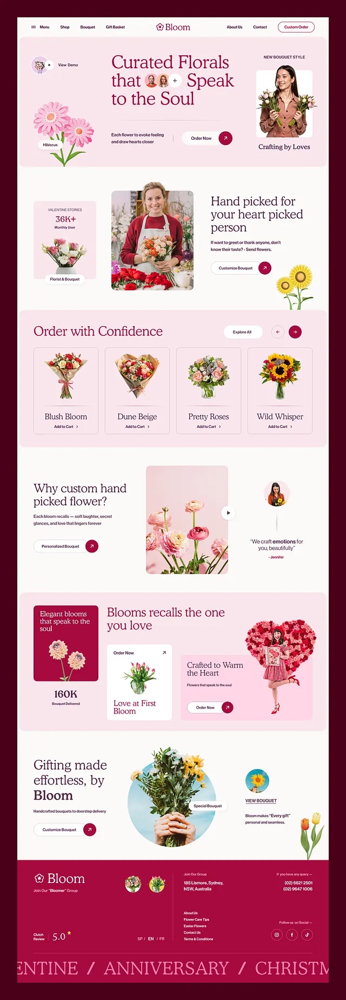

I'm a student focused on web development, visual style and sound production. What I enjoy most is combining simple design, functional code and a creative atmosphere that doesn't need complex effects.
Creative Developer / UI/UX & Frontend Developer / DAW Sound Engineer
Hi, I'm Adam Hofirek.
I build simple websites, visual designs and personal projects that connect frontend development with sound work. This portfolio showcases my core skills in HTML, CSS, Photoshop and sound engineering in FL Studio.
HTML
CSS
Photoshop
DAW
About
Who I am and what I create
This portfolio is designed to match my current skill level. I use only HTML and CSS, so I can explain every part of the structure, styling and responsive layout.
Skills
What I've learned
HTML
Semantic page structure, links, sections, headings and clear content.
CSS
Colors, spacing, typography, responsive layouts and working with classes.
Photoshop
Basic graphic editing, working with visual assets and preparing files.
FL Studio
Working with sound, music ideas, mixing and navigating the FL Studio environment.
Projects
Selected work

01
Bloom
A visual web project focused on a flower brand, soft colors and a striking product presentation. I included a real preview and a link to the original project files in this portfolio.
- Web
- Design
- Presentation
02
FL Studio Projects
Personal work focused on FL Studio, sound ideas, arrangement and basic mixing. This section shows my creative direction beyond code itself.
- FL Studio
- Mix
- Audio
<section>
display: grid;
color: #ff8a00;
03
Personal Portfolio
A website created as a year-end project. It presents my skills, personality, contact details and selected projects.
- HTML
- CSS
- Responsiveness
Contact
Contact
If you'd like to see more examples or get in touch, feel free to reach out via email, GitHub or Instagram.